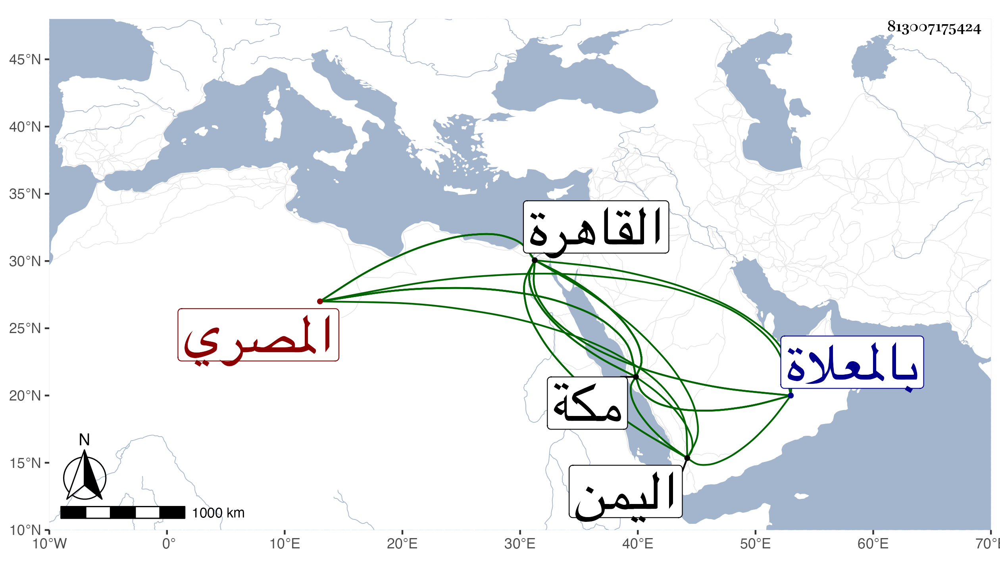

0902Sakhawi.DawLamic.ITO20230111-ara1.EIS1600.813007175424
Biography ID: 813007175424
499
محمد بن علي بن عبد الكريم المصري نزيل مكة وشيخ الفراشين بها ويعرف باليمني وبالكتبي . كان من سكان القاهرة وصوفية بيبرسيتها ثم ولي فراشة بالمسجد الحرام وكان يتردد لمكة من أجلها ويقيم بها أوقاتا ثم بأخرة كثرت إقامته بها وصار يتردد إلى القاهرة قليلا ، وتمشيخ بأخرة على الفراشين ودخل اليمن للتجارة واشترى بمكة دارا ثم وقفها على نفسه وأولاده . مات بها في تاسع عشر ذي الحجة سنة خمس وعشرين ودفن بالمعلاة وقد قارب السبعين أو بلغها . ذكره الفاسي ولم يسم جده وقال بلغني عنه أنه سمع بالقاهرة على أبي البقاء السبكي بعض الصحيح فالله أعلم . وذكره التقي بن فهد في معجمه وسمى جده وأورد عنه حديثا وكان استقراره في المشيخة فيما قيل بعد أحمد الدوري خال محمد البيسق ولذا لما مات هذا وتلقاها عنه علي بن أحمد بن فرج الطبري ثم مات تلقاها عنه ال ...
